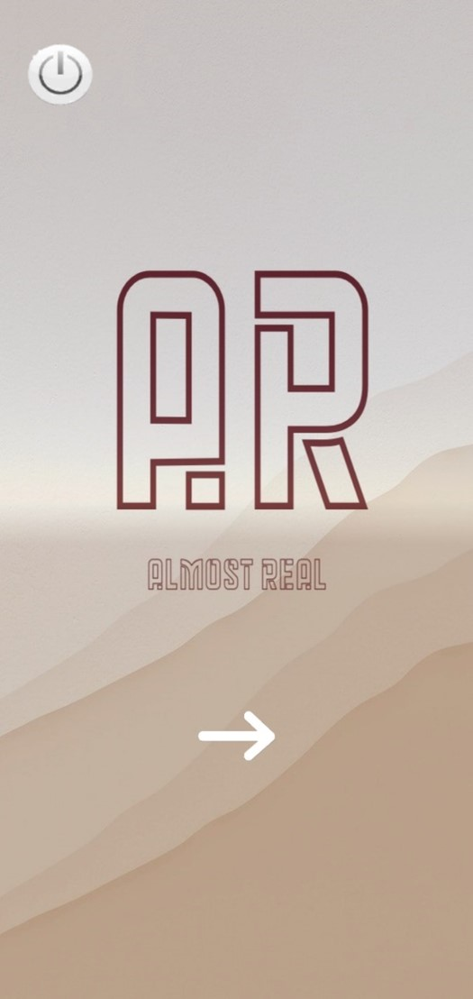
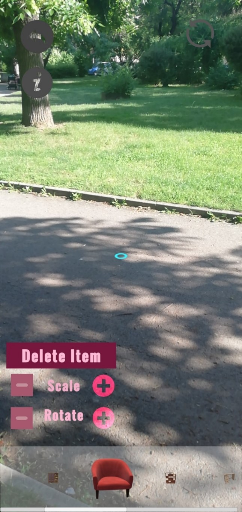
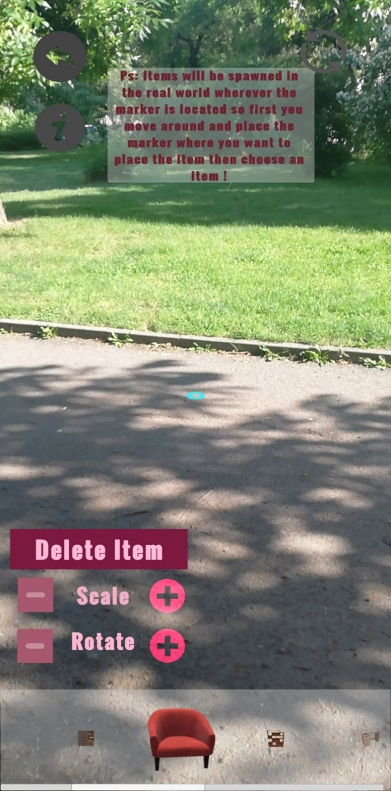
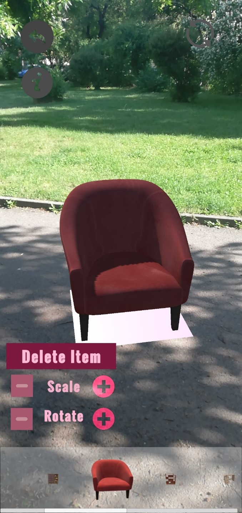
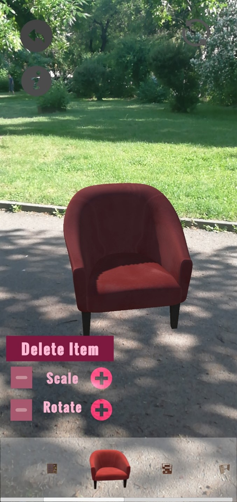
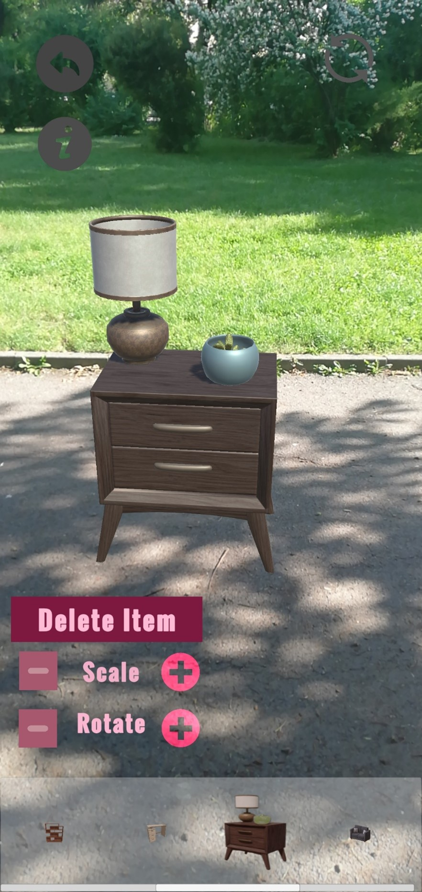
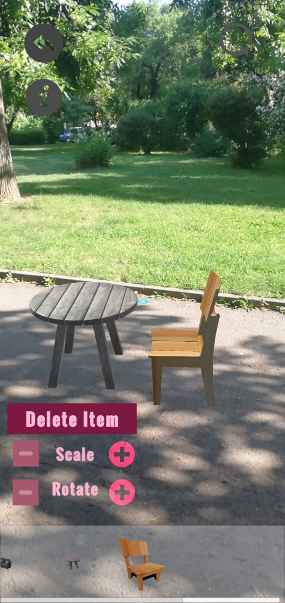
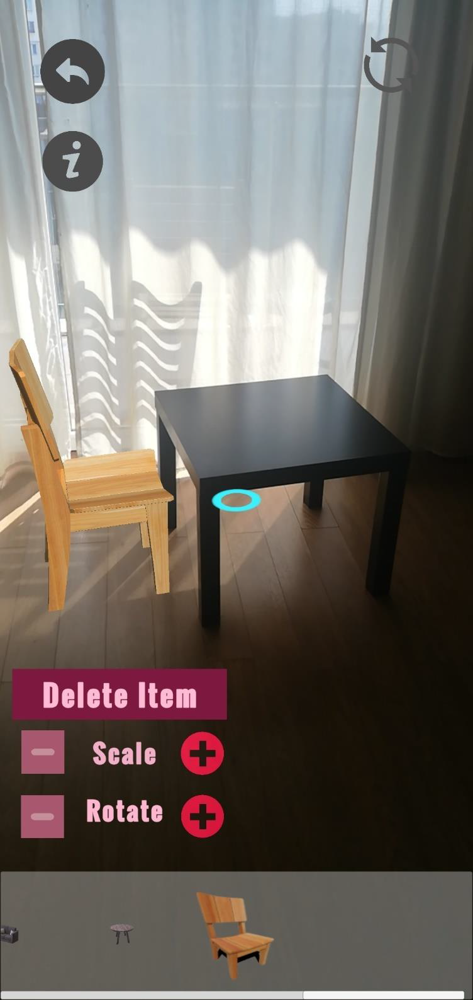

Cluster
Design.
Where logic meets feel. I design digital experiences that are clean, playful, and human — from wireframes to fully prototyped flows.
What began as tinkering with layouts and colors quickly turned into a passion for crafting experiences that feel human, playful, and meaningful. My engineering background gave me the technical mindset to understand how things work; design lets me reimagine how they should feel.
I've worked on everything from redesigning fashion and beauty websites to building apps that tackle real-world challenges like food waste. Every project reminds me that design isn't really about pixels — it's about people.
Projects in this space
Cluster
Technology.
I started as a Computer Science Engineer — and never left the code behind. My tools bridge the gap between how something is built and how it feels to use.
Bachelor of Science in Computer Engineering from the Technical University of Sofia, Bulgaria. I write in Python, C#, and Java; I build in Unity for AR/VR; I prototype in Figma; and I keep learning whatever the next problem needs.
Projects using this stack
Cluster
Human–Computer Interaction.
The thread that ties everything together. I care about how people experience a system — the moments of clarity, confusion, delight, and trust.
Currently completing a Master's in Interactive Media Technology at KTH Kungliga Tekniska Högskolan, Sweden — deep-diving into interaction design, XR, and human-centered systems.
Projects in this space
Cluster
AI & Research.
The frontier I'm most curious about — where intelligent systems learn to work with people rather than around them.
Diving deeper into XR and finding ways to weave it into everything else I know. On the side, still writing a paper about AI ethics — why AI should amplify human potential, not replace it. Fresh off a summer of research at ETH, I'm now spending most of my days deep in AI, agentic systems, and reading (a lot of) papers — currently exploring eye tracking with neural networks, and the sweet spot where perception meets intelligence.
Cluster
Experiences.
From internships to research to buildathons — every role has been a chance to mix creativity with problem-solving.
Cluster
Who I Am.
Noor Salama — CS Engineer & UX/UI Designer. Based in Stockholm.
I'm Noor Salama, and I love blending logic with creativity, turning wireframes into experiences that feel fun, intuitive, and a little unexpected. With a background in coding (Python, C#, Java), I bridge the gap between design and development.
I started my journey as a Computer Science Engineer, where I fell in love with solving problems through logic and code. But along the way, I realized something was missing, the spark of creativity. That's when I discovered UX/UI design.
Being Bulgarian, and having been born and raised in the UAE, I've grown up surrounded by a mix of cultures, perspectives, and aesthetics. This diversity naturally shapes how I approach design: open-minded, curious, and always thinking about different users and experiences.
Outside of design & tech you'll probably find me on the ice figure skating, in the water swimming, in the mountains, or enjoying a good tennis match. I'm also deeply connected to music — it's a constant source of inspiration in both my life and my creative work.
Now, I'm on a mission to bring a little funk into the digital world — designs that are not only functional but also spark joy, curiosity, and connection.
Education
Master's in Interactive Media Technologies
KTH Kungliga Tekniska Högskolan · Stockholm, Sweden
2025 – 2027BSc in Computer Engineering
Technical University of Sofia · Bulgaria
2018 – 2022Off-screen
Currently exploring
What's on my desk right now.
Diving deeper into XR and finding ways to weave it into everything else I know. On the side, still writing a paper about AI ethics — why AI should amplify human potential, not replace it. Fresh off a summer of research at ETH, I'm now spending most of my days deep in AI, agentic systems, and reading (a lot of) papers — currently exploring eye tracking with neural networks, and the sweet spot where perception meets intelligence.
Research Intern at ETH.
30 Jun – 28 Aug 2026 · Zürich, Switzerland
Joining the Faculty of Computer Science to conduct research at the intersection of Human-Computer Interaction (HCI) and Artificial Intelligence (AI), advancing human-centered intelligent systems.
Finalist
National Startup Buildathon — Antler.
18 – 28 Apr 2026 · Stockholm, Sweden
Reached the finals after winning the KTH round, and presented our project at the AWS Stockholm office. With my team, we built a security platform for early-stage startups powered by agentic AI. Using Python with LangGraph, our autonomous agents scan codebases for vulnerabilities, flag critical risks, and suggest concrete fixes — making "secure by design" practical for founders without a dedicated security team.
Society Challenge
Norrsken Fixathon.
5 – 6 Dec 2025 · Stockholm, Sweden
Joined the 48-hour Fixathon at Norrsken in the Society Challenge track. My team designed a platform that helps anyone find honest, dignified work by matching real-world skills to the people who need them — inspired by the Help Café model of turning everyday abilities into job opportunities.
Frontend Developer — KTH AI Society.
Oct 2025 – Present · Stockholm, Sweden
Collaborating with the team to build and improve the society's website.
Role
Intelligent Apps Sweden AB.
Mar 2025 – Jul 2025 · Stockholm, Sweden
Collaborated with cross-functional teams to optimize performance and enhance user's experience.
Internship
UX/UI Designer Intern — Coursfy.
Mar 2025 – Jul 2025 · Stockholm, Sweden
Designed an E-learning platform alongside the team, focusing on intuitive flows and accessible interfaces.
Internship
UX/UI Designer Intern — Peekabox.
Oct 2024 – Jun 2025 · Dubai, UAE
- Designed user-friendly UI/UX for web and mobile in an Agile/Scrum environment.
- Conducted user research, wireframing, and prototyping using Figma.
- Developed and tested frontend components to ensure smooth interactions.
- Collaborated with developers to ensure seamless design implementation.
- Assisted in transitioning designs into code.
Project 01 · Bachelor's Thesis
Almost Real
AR Furniture Space Configuration App
Overview
What is Almost Real?
Almost Real is an Android AR application developed as my Bachelor's thesis at the Technical University of Sofia. It allows users to visualise 3D furniture models placed in their real environment using their smartphone camera, without ever visiting a store.
Think of it as a personal IKEA Place, but built from scratch. Users scan their room, select furniture from a scrollable catalogue, spawn it into their space, and then move, scale, and rotate it until it feels right, all in real time.
The Problem
Online shopping lacks spatial context
Traditional e-commerce only shows flat images of furniture. Customers can't know if a sofa will fit their living room or match their existing decor until it arrives, often leading to costly returns and frustration.
The Solution
Try before you buy, at home
Almost Real uses markerless AR to scan real surfaces and overlay photorealistic 3D furniture models. Users get a true sense of size, proportion, and style — from their couch, at any time.
Key Features
What users can do
- Spawn furniture — tap any item from the horizontal scroll catalogue to place it exactly where the AR marker sits.
- Move it — drag the selected item across the detected plane to reposition it anywhere in the room.
- Scale it — use the + / − scale buttons to resize the object bigger or smaller.
- Rotate it — clockwise or anti-clockwise rotation with dedicated controls.
- Delete it — tap any spawned item and hit "Delete Item" to remove it.
- Refresh — reset the entire scene and start fresh.
- Info panel — a built-in guide helps first-time users get started instantly.
Tech Stack & Architecture
How it was built
The app uses Google ARCore via Unity's AR Foundation for markerless plane detection. 3D models were sourced from Sketchfab, imported and configured as prefabs in Unity, then grouped as Addressables — uploaded to Microsoft Azure Blob Storage so they load dynamically at runtime without bloating the APK.
The architecture centres on five core classes: PlacementIndicator (raycast + marker), DataHandler (model list + button creation), InputManagerScript (all touch interactions), AssetLoader (async addressable loading), and Item (scriptable objects holding prefab + sprite data).
Existing Apps
What was missing
- IKEA Place only includes ~50% of IKEA's actual catalogue and doesn't redirect to the store to purchase.
- Houzz is powerful but hard to navigate, and its floor plan tool failed in furnished rooms.
- Neither app gave users a truly seamless try-on-to-checkout flow.
My Approach
What I did differently
- Built a minimal UI that surfaces the catalogue without obscuring the AR view.
- Used cloud-hosted Addressables so models load on demand, keeping the app lightweight.
- Designed full interaction controls (move, scale, rotate, delete) accessible with one hand.
Testing & Outcomes
What I learned from testing
- Initial object spawn sizes were off → resolved by calibrating each prefab's scale in the Unity inspector before building.
- Scene switching broke the AR marker — fixed by attaching the PlacementIndicator script directly to the AR Camera.
- Azure connection required exact catalog files in the blob container — proper addressables rebuild resolved load errors.
- Final validation: 3D objects spawn, move, scale, rotate, and delete successfully across multiple Android devices.
Future Scope
Where Almost Real could go next
- iOS support (currently Android only).
- Direct integration with a furniture store's live product catalogue.
- In-app purchase / cart redirect functionality.
- Multi-language support.
- Auto-generated 3D models from product images using future ML pipelines.
- Would definitely redesign it, to a better modern-looking design.
Screenshots Demo
Watch it in action








Project 02 · XR Course · Master's
Mini-World
Educational VR Garden Game
Implemented in the project
Features
Overview
What is Mini-World?
Mini-World is an educational VR game developed as part of the Extended Reality course, built in a team of three. Players are shrunk down to insect size and dropped into a lush virtual garden, a world that feels alive, curious, and full of things to discover.
The game combines exploration, photography, and quiz-based interactions to form a complete learning loop: discover → capture → learn → test. Its main goal is to let children explore the hidden world of insects, helping them discover and understand organisms that are normally beyond our sight. To ensure a safe and immersive experience, the project was specifically designed in VR.
Level 1 — The Garden
Explore & Discover
Players roam a virtual garden and encounter different insects hidden throughout the environment. Interacting with each insect reveals a fun educational fact about it. Players can also take in-game photos of each insect they find, which get stored in their personal journal, building a collection as they explore.
Level 2 — The Quiz
Test Your Knowledge
After exploring the garden, players enter Level 2 — a short quiz that tests what they learned from their insect encounters. The questions are based on the facts discovered during exploration, reinforcing the learning through active recall in a playful, low-pressure format.
Key Features
What makes Mini-World tick
- Starting menu with level selection — players choose their entry point from a clear menu.
- Insect interactions — approaching and engaging with each insect triggers a pop-up fact.
- In-game camera & journal — players photograph each insect, photos are then stored and viewable in a journal.
- Quiz system — Level 2 presents questions drawn from the facts players encountered in Level 1.
- Data logging — all player activity is logged to a CSV file for analysis and research purposes.
Gameplay Demo
Watch it in action
Project 03 · UI Design
Online Payment Landing Page
Web UI · Banking & FinTech
Overview
What is this project?
A fully designed landing page for an online payment and digital banking product. The goal was to build trust instantly, because in FinTech, first impressions directly affect conversion. The design communicates security, speed, and simplicity above all else.
The Challenge
Trust is hard to earn on a single page
Financial products face a uniquely high bar: users need to feel safe before they even consider signing up. The design had to balance boldness with credibility, confident but not aggressive.
My Approach
Clarity over decoration
I led with a strong hero section that names the value proposition upfront, used a restrained colour palette with high contrast CTAs, and let generous whitespace do the trust-building heavy lifting.
Design Decisions
Key choices that shaped the page
- Typography hierarchy — bold display type for the headline, lighter weight for supporting copy.
- Colour palette — deep navy with electric accent, signalling reliability and modernity.
- Social proof positioning — trust indicators placed close to the CTA to reduce friction.
- Card UI for features — scannable benefit blocks readable in under 10 seconds.

Tools Used
Stack
Project 04 · UX/UI Design
Le Petite Café
Web Design · Café Ordering
Overview
What is Le Petite Café?
Le Petite Café is a website designed for a boutique café where customers can browse the menu and place orders directly online. The goal was to create an ordering experience that feels as warm and inviting as walking into the café itself, making it easy to find what you want, customise your order, and check out without friction.
The Challenge
Ordering that feels effortless
Most café websites are either too basic or too cluttered. The challenge was to design a clean, intuitive ordering flow that guides users from browsing to checkout in as few steps as possible, without losing the personality of the brand.
My Approach
Warm design, clear flow
I used earthy tones, generous food photography, and a simple layout hierarchy to make the ordering process feel natural. Every screen was designed with one goal: get the user to what they want fast, with no confusion along the way.
Key Screens
What the website covers
- Home — hero section with featured items, today's specials, and a clear call to order.
- Menu — categorised by drinks, food, and extras with filters and food photography.
- Item detail — customisation options (size, milk type, extras), quantity, and add to cart.
- Cart & checkout — order summary, pickup or delivery selection, and payment.
- Order confirmation — clean confirmation screen with estimated ready time.


Tools & Approach
Stack
Project 05 · UI Design
Muzic App
Mobile App · Music Streaming
Overview
What is Muzic?
Muzic is a dark-mode music streaming app concept that puts the artist's album at the centre of the experience. Designed for people who care deeply about how music looks as much as how it sounds, the UI adapts its colour palette dynamically to the currently playing track, creating an immersive, ever-changing environment.
The Challenge
Standing out in a crowded space
Spotify, Apple Music, Tidal — music apps are dominated by giants. The design challenge was to carve out a visual identity that felt fresh, premium, and genuinely music-first rather than feature-first.
My Approach
Visual immersion as a differentiator
I designed around the music rather than around the interface. Album art bleeds into backgrounds, text adapts to contrast, and the player screen becomes a full-canvas experience, almost like a digital album sleeve.


Tools Used
Stack
Project 06 · UX/UI Design
Foodz Delivery App
Mobile App · Food Delivery
Overview
What is Foodz?
Foodz is a comprehensive food delivery app concept designed from the ground up, covering every stage of the user's journey from restaurant discovery to real-time order tracking and post-delivery review. The design prioritises speed and appetite appeal: food should look irresistible on screen.
The Challenge
Navigating complexity without friction
Food delivery apps carry enormous feature complexity. The challenge was to keep every flow feeling light and fast, even when handling many options and states.
My Approach
Progressive disclosure
I structured the app so users are never overwhelmed, showing only what's relevant at each moment. The home screen is curated, not cluttered; complexity is revealed gradually as users drill deeper into their order.


Tools Used
Stack
Project 07 · Web Design · Fashion
Elie Saab — About Page
Luxury Fashion · Editorial Web Design
Overview
What is this project?
A reimagined "About" page for Elie Saab, one of the most celebrated names in haute couture. The project explores how a luxury fashion house can tell its story online: through restraint, grandeur, and the kind of editorial stillness that lets craftsmanship speak for itself.
Rather than showcasing products, this page is purely narrative — the founder's story, the house's heritage, and the philosophy behind the stitches.
The Challenge
Luxury that doesn't shout
Luxury brands walk a fine line online, the web is inherently noisy, but the brand demands quiet authority. Every pixel choice had to feel deliberate and refined.
Design Philosophy
Editorial minimalism
Inspired by high-fashion print editorials, full-bleed photography, serif-driven typography with wide tracking, off-white backgrounds, and sparse layout that treats empty space as a design element.
Design Preview
Full design

Tools Used
Stack
Contact
Let's talk.
Reach out for collaborations, research, internships, or just to say hi.
CV
Curriculum Vitae.
The short version lives in this network. The full PDF is available on request.
Explore the Experiences cluster for role-by-role detail, or the Who I Am cluster for education and background. For a formatted PDF, email noor.salama@example.com or reach out on LinkedIn.